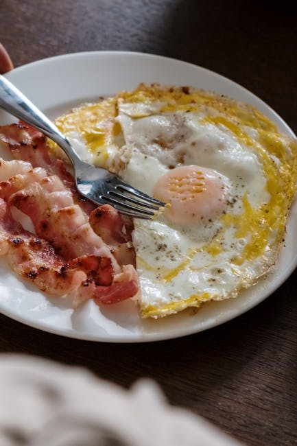

← Back to all nutrition guides
What Should I Eat To Lose Belly Fat Male Over 45
A realistic guide for busy professionals over 40.
Feeling tired and stuck with that stubborn belly fat? You're not alone. As a busy guy over 45, it's easy to let weight creep up when juggling work, family, and life's demands. You’ve likely tried diets that required you to track every calorie or spend hours in the kitchen, only to find yourself overwhelmed and back to square one. The frustration is real, but it doesn’t have to be hard. What if I told you that you can simplify your meals and still enjoy life while shedding those extra pounds? Let’s get you on track to a healthier you, without the hassle.
Why This Is So Hard (And You're Not Crazy)
You’re balancing work, family, and perhaps even caring for aging parents or planning vacations. It’s a lot! When hunger hits and you're exhausted, it’s tempting to grab whatever's easy—fast food, takeout, or snacks. This busy lifestyle leads to unhealthy eating habits without even realizing it. You might find yourself reaching for calorie-dense options that just add to the belly fat you’re trying to lose. And let’s face it, after 40, it can feel like your body has a mind of its own, making weight loss even tougher. You're not just busy; you're on autopilot, and that’s okay—we're going to make it simpler for you.
Want a personalized version of this strategy?
Try the AI Food Coach
Simple Strategy
- 1. Focus on protein: Start every meal with a good protein source, like eggs or grilled chicken. This helps keep you full longer.
- 2. Swap out refined carbs: Replace white bread and pasta with whole grains or legumes. Your body will thank you, and you’ll feel satisfied.
- 3. Stay hydrated: Drink water or herbal teas throughout the day. Sometimes thirst is mistaken for hunger.
What This Looks Like
Let’s say it’s Tuesday. You wake up late and rush out the door with a granola bar in hand. At lunch, your coworker brings pizza. You eat a slice, telling yourself ‘I’ll hit the gym later.’ By dinner, you’re starving and end up ordering takeout. And just like that, your good intentions of eating healthy turned into another calorie bomb. It happens to all of us! Life gets busy, and sometimes you need those convenient options. But there are smarter ways to navigate these choices without strict diets or calorie counting.Common Mistakes
- 1. Skipping meals: This leads to extreme hunger and inevitable poor food choices later.
- 2. Relying on meal delivery services: While convenient, many options are far from healthy and can pack 1,000+ calories.
- 3. Ignoring portion sizes: It’s easy to underestimate how much you're eating, especially with restaurant servings.
These strategies work best when personalized to your lifestyle and goals.
Stop Guessing What to Eat Every Day
Most people don’t fail because they don’t know what’s healthy. They fail because they’re busy, tired, and making decisions on the fly. Today’s Food Coach removes that friction by giving you a simple daily plan based on your goals.
Get Your Daily PlanRelated Nutrition Guides
- What To Eat When You Have No Time To Cook
- How To Stop Gaining Weight As You Age Male
- Quick Dinners For Weight Loss Men Over 50
Why This Is Hard to Stick To
The truth is, knowing what to do isn't the hurdle. It’s the daily decision fatigue and inconsistency that trips you up. You don’t need complicated meal plans or to count every calorie; what you need is a way to make smarter choices effortlessly. This is where a personalized meal planning tool can save you time and energy, helping you stay on track with meals that fit your lifestyle without the guesswork or stress.
Try Today's Food Coach
Generate a personalized meal strategy based on your lifestyle and goals.
Try the AI Food CoachFrequently Asked Questions
Do I have to give up my favorite foods?
Not at all! It's about balance. You can still enjoy your favorites in moderation while focusing on healthier choices.
How much time will meal planning actually take?
With a personalized meal planner, you can save time. Many plans offer quick, healthy recipes or even shopping lists to streamline your week.
Is exercise necessary for losing belly fat?
While exercise is beneficial, focusing on your diet will yield significant results. You can start with small changes in your eating habits.